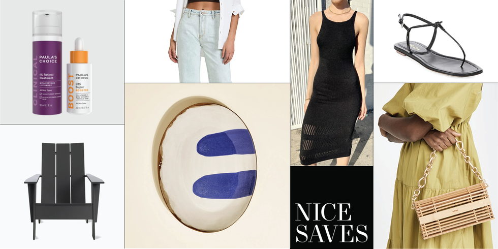
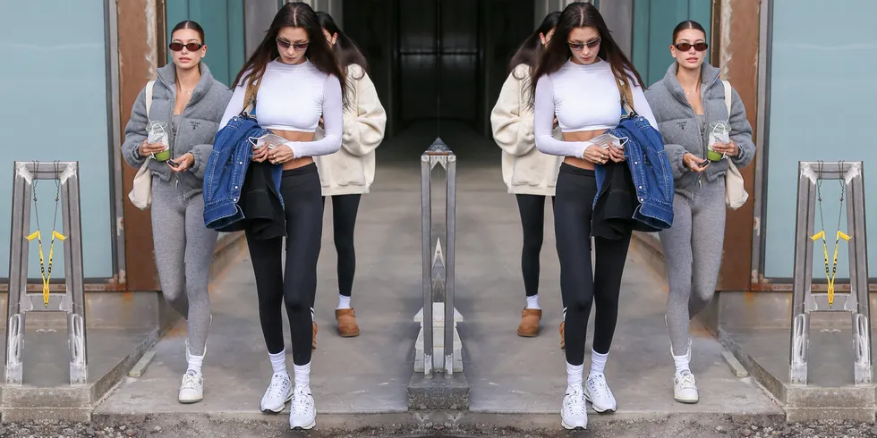

Nice Saves: 17 Must-Have Items on Sale This Week
Including rare deals on Prada footwear and NARS creamy concealer.

While true marathon sale events happen only a few times a year, we have good news for budget-savvy shoppers: On the beauty front, you can take up to 20 percent off NARS's cult classic products sitewide including a certain well loved concealer
with the code FRIENDS during its Friends and Family Sale, going on now through May 17. Plus, we're keeping tabs on discounted favorites from Paula's Choice, along with some hydrating essentials to prep your skin for summer from Tan Luxe,
Bite Beauty, and more. And to encourage you to enjoy a little fresh air, we spotted lots of great markdowns at Design Within Reach's annual outdoor sale, including backyard ready Adirondack chairs.
The 12 Best Walking Shoes to Wear for Miles (and Miles)
So comfortable, you won't want to take them off.

Mental health breaks, meandering catch ups with a friend, TikTok inspired hot girl walks: No matter the reason for getting your steps in, comfortable and supportive walking shoes are a must. Whether you're logging a few miles per day or taking
short laps around the block, you deserve the best walking shoes.Running shoes can double as walking shoes if you're low on closet space. The top versions of both have minimal break-in periods and feel light on your feet. Dedicated walking
shoes might have extra lateral support to stabilize your foot and ankle, plus a pillowy sole."Since walking time tends to be more time on my feet than going out for a quick run, underfoot comfort and cushioning is mission critical"